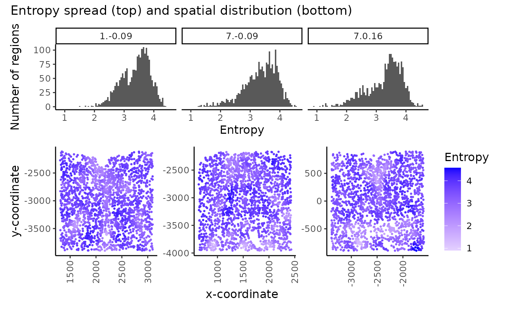
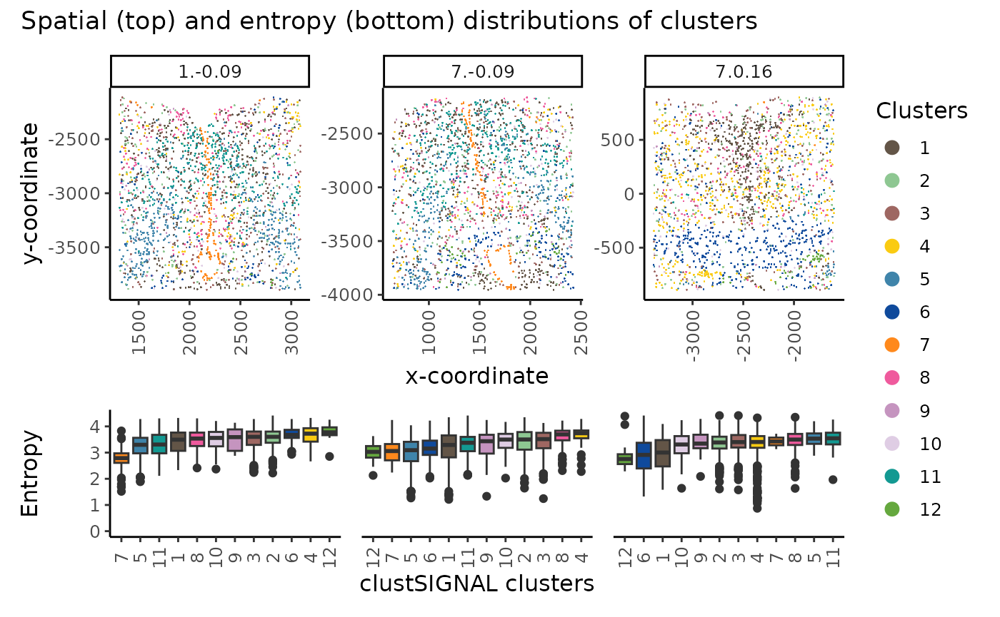

Multisample analysis
Pratibha Panwar, Boyi Guo, Haowen Zhou, Stephanie Hicks, Shila Ghazanfar
2024-09-08
Source:vignettes/v2_MERFISH_mouseHypothalamus.Rmd
v2_MERFISH_mouseHypothalamus.RmdMERFISH mouse preoptic hypothalamus data analysis
# load required packages
library(clustSIGNAL)
library(distances)
library(cluster)
library(aricode)
library(dplyr)
library(ggplot2)
library(patchwork)
library(scattermore)
data(mHypothal)
spe <- SpatialExperiment(assays = list(logcounts = mh_expr),
colData = mh_data, spatialCoordsNames = c("X", "Y"))
spe## class: SpatialExperiment
## dim: 135 6000
## metadata(0):
## assays(1): logcounts
## rownames(135): Ace2 Adora2a ... Ttn Ttyh2
## rowData names(0):
## colnames(6000): 74d3f69d-e8f2-4c33-a8ca-fac3eb65e55a
## 41158ddc-e70c-487b-b891-0cb3c8452555 ...
## 54145623-7071-482c-b9da-d0d2dd31274a
## 96bc85ce-b993-4fb1-8e0c-165f83f0cfd0
## colData names(4): Cell_ID Cell_class sample_id samples
## reducedDimNames(0):
## mainExpName: NULL
## altExpNames(0):
## spatialCoords names(2) : X Y
## imgData names(0):
names(colData(spe))## [1] "Cell_ID" "Cell_class" "sample_id" "samples"To run clustSIGNAL, we need the column names of sample and cell IDs in the colData dataframe of the spatial experiment object. Here, the cell IDs are in the column ‘Cell_ID’ and sample IDs are in ‘samples’ column.
Running clustSIGNAL
set.seed(101)
samples <- "samples"
cells <- "Cell_ID"
res_hyp <- clustSIGNAL(spe, samples, cells, outputs = "a")## [1] "Calculating PCA to use as reduced dimension input."
## [1] "clustSIGNAL run started. 2024-09-08 21:12:10.435356"
## [1] "Initial nonspatial clustering performed. Clusters = 11 2024-09-08 21:12:12.023537"
## [1] "Nonspatial subclustering performed. Subclusters = 54 2024-09-08 21:12:14.109875"
## [1] "Regions defined. 2024-09-08 21:12:16.763886"
## [1] "Region domainness calculated. 2024-09-08 21:12:17.772145"
## [1] "Smoothing performed. NN = 30 Kernel = G Spread = 0.05 2024-09-08 21:13:04.300261"
## [1] "Nonspatial clustering performed on smoothed data. Clusters = 12 2024-09-08 21:13:05.730986"
## [1] "clustSIGNAL run completed. 2024-09-08 21:13:05.732779"
spe <- res_hyp$spe_final
spe## class: SpatialExperiment
## dim: 135 6000
## metadata(0):
## assays(2): logcounts smoothed
## rownames(135): Ace2 Adora2a ... Ttn Ttyh2
## rowData names(0):
## colnames(6000): 74d3f69d-e8f2-4c33-a8ca-fac3eb65e55a
## 41158ddc-e70c-487b-b891-0cb3c8452555 ...
## 54145623-7071-482c-b9da-d0d2dd31274a
## 96bc85ce-b993-4fb1-8e0c-165f83f0cfd0
## colData names(8): Cell_ID Cell_class ... entropy reCluster
## reducedDimNames(2): PCA PCA.smooth
## mainExpName: NULL
## altExpNames(0):
## spatialCoords names(2) : X Y
## imgData names(1): sample_idCalculating clustering metrics
samplesList <- levels(spe[[samples]])
# calculating silhouette width per sample
silWidthRC <- matrix(nrow = 0, ncol = 3)
for (s in samplesList) {
speX <- spe[, spe[[samples]] == s]
clust_sub <- as.numeric(as.character(speX$reCluster))
cXg <- t(as.matrix(logcounts(speX)))
distMat <- distances(cXg)
silCluster <- as.matrix(silhouette(clust_sub, distMat))
silWidthRC <- rbind(silWidthRC, silCluster)
}
spe$rcSil <- silWidthRC[, 3]
# for datasets with annotated cell type information, we can also calculate
# metrics like adjusted rand index (ARI) and normalised mutual information (NMI)
as.data.frame(colData(spe)) %>%
group_by(samples) %>%
summarise(ARI = aricode::ARI(Cell_class, reCluster),
NMI = aricode::NMI(Cell_class, reCluster),
ASW = mean(rcSil),
min_Entropy = min(entropy),
max_Entropy = max(entropy),
mean_Entropy = mean(entropy))## # A tibble: 3 × 7
## samples ARI NMI ASW min_Entropy max_Entropy mean_Entropy
## <fct> <dbl> <dbl> <dbl> <dbl> <dbl> <dbl>
## 1 1.-0.09 0.422 0.599 0.0819 1.52 4.42 3.39
## 2 7.-0.09 0.495 0.656 0.125 1.25 4.55 3.35
## 3 7.0.16 0.627 0.717 0.104 0.904 4.57 3.28Visualising clustSIGNAL outputs
colors <- c("#635547", "#8EC792", "#9e6762", "#FACB12", "#3F84AA", "#0F4A9C",
"#ff891c", "#EF5A9D", "#C594BF", "#DFCDE4", "#139992", "#65A83E",
"#8DB5CE", "#005579", "#C9EBFB", "#B51D8D", "#532C8A", "#8870ad",
"#cc7818", "#FBBE92", "#EF4E22", "#f9decf", "#c9a997", "#C72228",
"#f79083", "#F397C0", "#DABE99", "#c19f70", "#354E23", "#C3C388",
"#647a4f", "#CDE088", "#f7f79e", "#F6BFCB", "#7F6874", "#989898",
"#1A1A1A", "#FFFFFF", "#e6e6e6", "#77441B", "#F90026", "#A10037",
"#DA5921", "#E1C239", "#9DD84A")Entropy spread and distribution
# Histogram of entropy spread
hst_ent <- as.data.frame(colData(spe)) %>%
ggplot(aes(entropy)) +
geom_histogram(binwidth = 0.05) +
facet_wrap(vars(samples), nrow = 1) +
labs(x = "Entropy", y = "Number of regions") +
theme_classic() +
theme(text = element_text(size = 12))
# Spatial plot showing sample entropy distribution
spt_ent <- as.data.frame(colData(spe)) %>%
ggplot(aes(x = spatialCoords(spe)[, 1],
y = -spatialCoords(spe)[, 2])) +
geom_scattermore(pointsize = 3,
aes(colour = entropy)) +
scale_colour_gradient2("Entropy", low = "grey", high = "blue") +
scale_size_continuous(range = c(0, max(spe$entropy))) +
facet_wrap(vars(samples), scales = "free", nrow = 1) +
labs(x = "x-coordinate", y = "y-coordinate") +
theme_classic() +
theme(strip.text = element_blank(),
text = element_text(size = 12),
axis.text.x = element_text(angle = 90, vjust = 0.5))
hst_ent / spt_ent + plot_layout(heights = c(3,5)) +
plot_annotation(title = "Entropy spread (top) and spatial distribution (bottom)")
In multisample analysis, the spread (A) and spatial distribution (B) of region entropy measures can be useful in assessing and comparing the tissue structure in the samples.
clustSIGNAL clusters visualisation
df_ent <- as.data.frame(colData(spe))
# spatial plot
spt_clust <- df_ent %>%
ggplot(aes(x = spatialCoords(spe)[, 1],
y = -spatialCoords(spe)[, 2])) +
geom_scattermore(pointsize = 3, aes(colour = reCluster)) +
scale_color_manual(values = colors) +
facet_wrap(vars(samples), scales = "free", nrow = 1) +
labs(x = "x-coordinate", y = "y-coordinate") +
guides(color = guide_legend(title = "Clusters",
override.aes = list(size = 3))) +
theme_classic() +
theme(text = element_text(size = 12),
axis.text.x = element_text(angle = 90, vjust = 0.5))
box_clust <- list()
for (s in samplesList) {
df_ent_sub <- as.data.frame(colData(spe)[spe[[samples]] == s, ])
# calculating median entropy of each cluster in a sample
celltype_ent <- df_ent_sub %>%
group_by(as.character(reCluster)) %>%
summarise(meanEntropy = median(entropy))
# reordering clusters by their median entropy
# low to high median entropy
cellOrder <- celltype_ent$meanEntropy
names(cellOrder) <- celltype_ent$`as.character(reCluster)`
cellOrder = sort(cellOrder)
df_ent_sub$reCluster <- factor(df_ent_sub$reCluster, levels = names(cellOrder))
# box plot of cluster entropy
colors_ent <- colors[as.numeric(names(cellOrder))]
box_clust[[s]] <- df_ent_sub %>%
ggplot(aes(x = reCluster, y = entropy, fill = reCluster)) +
geom_boxplot() +
scale_fill_manual(values = colors_ent) +
facet_wrap(vars(samples), nrow = 1) +
labs(x = "clustSIGNAL clusters", y = "Entropy") +
ylim(0, NA) +
theme_classic() +
theme(strip.text = element_blank(),
legend.position = "none",
text = element_text(size = 12),
axis.text.x = element_text(angle = 90, vjust = 0.5))
}
spt_clust / (patchwork::wrap_plots(box_clust[1:3], nrow = 1) +
plot_layout(axes = "collect")) +
plot_layout(guides = "collect", heights = c(5, 3)) +
plot_annotation(title = "Spatial (top) and entropy (bottom) distributions of clusters")
The spatial location (top) and entropy distribution (bottom) of the clusters can be compared in a multisample analysis, providing spatial context of the cluster cells and their neighbourhood compositions in the different samples.
Session Information
## R version 4.4.1 (2024-06-14)
## Platform: x86_64-pc-linux-gnu
## Running under: Ubuntu 22.04.4 LTS
##
## Matrix products: default
## BLAS: /usr/lib/x86_64-linux-gnu/openblas-pthread/libblas.so.3
## LAPACK: /usr/lib/x86_64-linux-gnu/openblas-pthread/libopenblasp-r0.3.20.so; LAPACK version 3.10.0
##
## locale:
## [1] LC_CTYPE=C.UTF-8 LC_NUMERIC=C LC_TIME=C.UTF-8
## [4] LC_COLLATE=C.UTF-8 LC_MONETARY=C.UTF-8 LC_MESSAGES=C.UTF-8
## [7] LC_PAPER=C.UTF-8 LC_NAME=C LC_ADDRESS=C
## [10] LC_TELEPHONE=C LC_MEASUREMENT=C.UTF-8 LC_IDENTIFICATION=C
##
## time zone: UTC
## tzcode source: system (glibc)
##
## attached base packages:
## [1] stats4 stats graphics grDevices utils datasets methods
## [8] base
##
## other attached packages:
## [1] scattermore_1.2 patchwork_1.2.0
## [3] ggplot2_3.5.1 dplyr_1.1.4
## [5] aricode_1.0.3 cluster_2.1.6
## [7] distances_0.1.11 clustSIGNAL_0.1.0
## [9] SpatialExperiment_1.14.0 SingleCellExperiment_1.26.0
## [11] SummarizedExperiment_1.34.0 Biobase_2.64.0
## [13] GenomicRanges_1.56.1 GenomeInfoDb_1.40.1
## [15] IRanges_2.38.1 S4Vectors_0.42.1
## [17] BiocGenerics_0.50.0 MatrixGenerics_1.16.0
## [19] matrixStats_1.4.0 BiocStyle_2.32.1
##
## loaded via a namespace (and not attached):
## [1] gridExtra_2.3 rlang_1.1.4
## [3] magrittr_2.0.3 scater_1.32.1
## [5] compiler_4.4.1 DelayedMatrixStats_1.26.0
## [7] systemfonts_1.1.0 vctrs_0.6.5
## [9] pkgconfig_2.0.3 crayon_1.5.3
## [11] fastmap_1.2.0 magick_2.8.4
## [13] XVector_0.44.0 scuttle_1.14.0
## [15] labeling_0.4.3 utf8_1.2.4
## [17] rmarkdown_2.28 UCSC.utils_1.0.0
## [19] ggbeeswarm_0.7.2 ragg_1.3.2
## [21] xfun_0.47 bluster_1.14.0
## [23] zlibbioc_1.50.0 cachem_1.1.0
## [25] beachmat_2.20.0 jsonlite_1.8.8
## [27] highr_0.11 DelayedArray_0.30.1
## [29] BiocParallel_1.38.0 irlba_2.3.5.1
## [31] parallel_4.4.1 R6_2.5.1
## [33] bslib_0.8.0 jquerylib_0.1.4
## [35] Rcpp_1.0.13 bookdown_0.40
## [37] knitr_1.48 Matrix_1.7-0
## [39] igraph_2.0.3 tidyselect_1.2.1
## [41] abind_1.4-5 yaml_2.3.10
## [43] viridis_0.6.5 codetools_0.2-20
## [45] lattice_0.22-6 tibble_3.2.1
## [47] withr_3.0.1 evaluate_0.24.0
## [49] desc_1.4.3 pillar_1.9.0
## [51] BiocManager_1.30.25 generics_0.1.3
## [53] sparseMatrixStats_1.16.0 munsell_0.5.1
## [55] scales_1.3.0 glue_1.7.0
## [57] tools_4.4.1 BiocNeighbors_1.22.0
## [59] ScaledMatrix_1.12.0 fs_1.6.4
## [61] grid_4.4.1 colorspace_2.1-1
## [63] GenomeInfoDbData_1.2.12 beeswarm_0.4.0
## [65] BiocSingular_1.20.0 vipor_0.4.7
## [67] cli_3.6.3 rsvd_1.0.5
## [69] textshaping_0.4.0 fansi_1.0.6
## [71] S4Arrays_1.4.1 viridisLite_0.4.2
## [73] gtable_0.3.5 sass_0.4.9
## [75] digest_0.6.37 SparseArray_1.4.8
## [77] ggrepel_0.9.6 rjson_0.2.22
## [79] farver_2.1.2 htmltools_0.5.8.1
## [81] pkgdown_2.1.0 lifecycle_1.0.4
## [83] httr_1.4.7